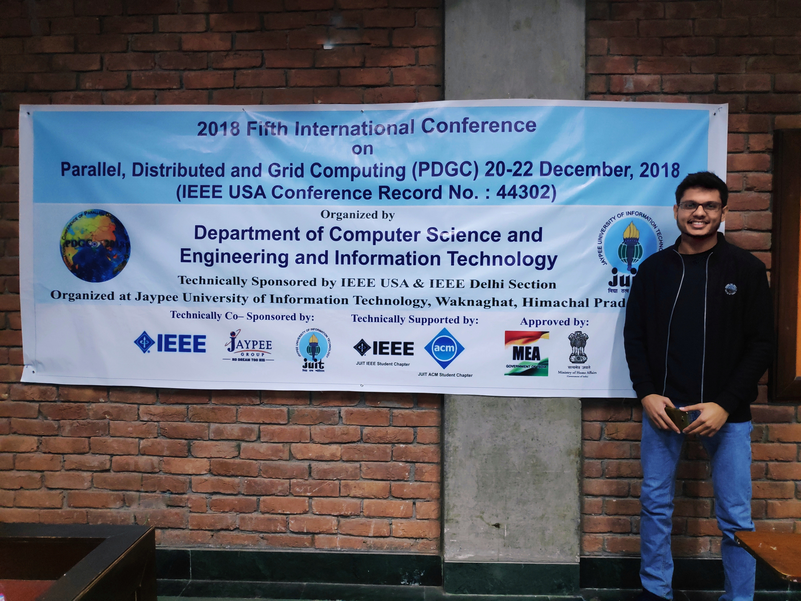

Currently pursuing my masters in Computer Science (Research Track) at Virginia Tech. I work as a Graduate Research Assistant at SWIM Center, VT. I am involved in an interdisciplinary research which is at the intersection of Water Infrastructure and Artificial Intelligence. I am highly active on competitive programming platforms and am passionate about solving challenging problems. I have been taking part in global coding competitions since last few years, and have also represented my university in the ACM ICPC Mid Atlantic USA Regionals.
GPA: 4.0/4.0
Coursework: Data Analytics, Information Visualization, IT for Infrastructure, Research Methods in CS
GPA: 8.18/10
Relevant Coursework: Data Structures, Software Engineering, Algorithms, Operating Systems, Database Management, Web Development, Deep Learning
Position of Responsibility: Technical Director, Indian Society for Technical Education
Major focus of my research is on exploring the applications of Articial Intelligence and Machine Learning in the water sector. While many domains have sucessfully implemented AI on a system scale, water sector is still naive when it comes to using AI and ML for their system. My research involes piloting with water utilities across the US and understanding their operations and efforts that they have put in towards data analytics and AI. After collecting data points regarding their best practices, I aim to develop a system driven AI framework, wherein, AI can serve as the 'Heart of System Engine' for the water utilities to help them with their daily operations.
My undergraduate research was focused on applications of predictive modeling and time series analysis in smart grid paradigm and COVID-19. Within the smart grid domain, I worked on voltage dip measurement of smart energy meters using PCA analysis, and energy theft detection and demand forecasting using deep learning techniques. I also explored an exciting and novel research area related to COVID-19. I formulated an economy boosting algorithm which can be considered during COVID-19 lockdowns. The algorithm conisders the forecasted values of COVID-19 cases and economy to provide a range of days to uplift COVID-19 lockdowns. My research works at ST Lab have been published in reputed international conferences and journals of IEEE and Elsevier.
Also indexed in WHO’s global literature on COVID-19
Paper presentation at IEEE Parallel Distributed and Grid Computing (PDGC), 2018, Waknaghat, Solan, India

Java, Python, C/C++, Shell, SQL, JavaScript, Node.js, Bash, HTML/CSS
d3, pandas, NumPy, Matplotlib
Tableau, Splunk, Collections, Spark, Spring Boot, Git, VS Code, Jenkins, Jira, Postman, MySQL
An In-memory data structure for key-value store which is used as a database and cache for operation like add, range, expire, rank etc. Created in Java using branching of data structures like sets, treemaps and hashmaps.
A seat allocation algorithm which maintains social distancing of 3 columns and 1 row among viewers. Finds seats your incoming viewers/ticket requests with best and worst case time complexity of O(log n) and O(n^2) respectively.
Developed a Stacked LSTM model for time-series stock value prediction for dynamic user inputted dates (Dataset: TATA Global Beverages)
Summing up my (most of) regular days:
9-5: I am a programmer, software developer and researcher.
5-9: I am a person who seeks joy in interactions with people, food and a walk around in the woods. I like clicking and editing pictures (you may find some on instagram: darshanvek_). Playing tennis/volleyball is the most exciting part of my daily routine. I love hiking and am currently exploring the beautiful trails in Virginia, one weekend at a time!
Email: dvekaria@vt.edu